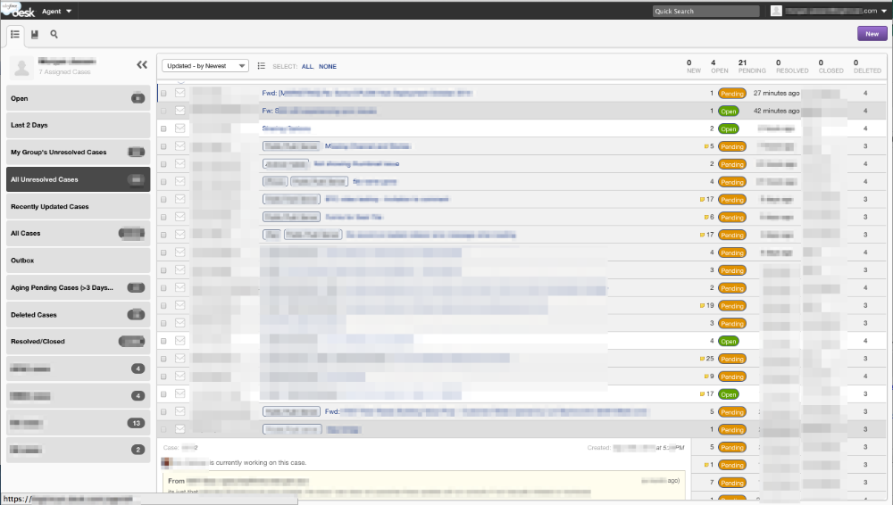

<pre style="white-space: pre-wrap;">
<a href="./">up one level</a>
---
2014-12-27

In the Desk.com Case List Teammates’ Cases-being-worked are Highlighted Gray

In Desk.com, in the case list when my teammate is working on a case, the case is highlighted in a darker grey than the other cases. I confirmed this by hovering my mouse over any of the dark gray cases in the list and I see the “Morgan Doe is currently working on this case.” message in the popover-details-window.

Screenshot:



*2015-01-21 edit: previously published at http://w̶i̶e̶l̶d̶l̶i̶n̶u̶x̶.̶c̶o̶m̶/2014-12-26-desk-cases-highlighted-gray.html
*2015-07-30 edit: edited the whitespace to improve this post’s readability


[2020 edit: Moved to: https://i̶n̶v̶e̶s̶t̶o̶r̶w̶o̶r̶k̶e̶r̶.̶c̶o̶m̶/2014/... .html.]

</pre>
